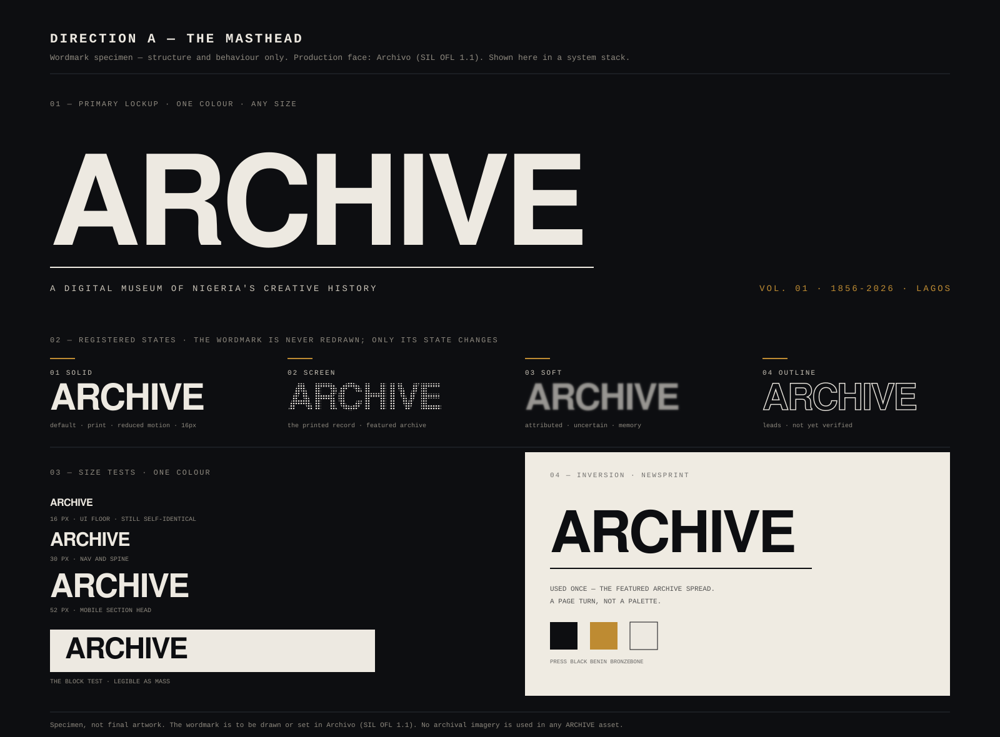
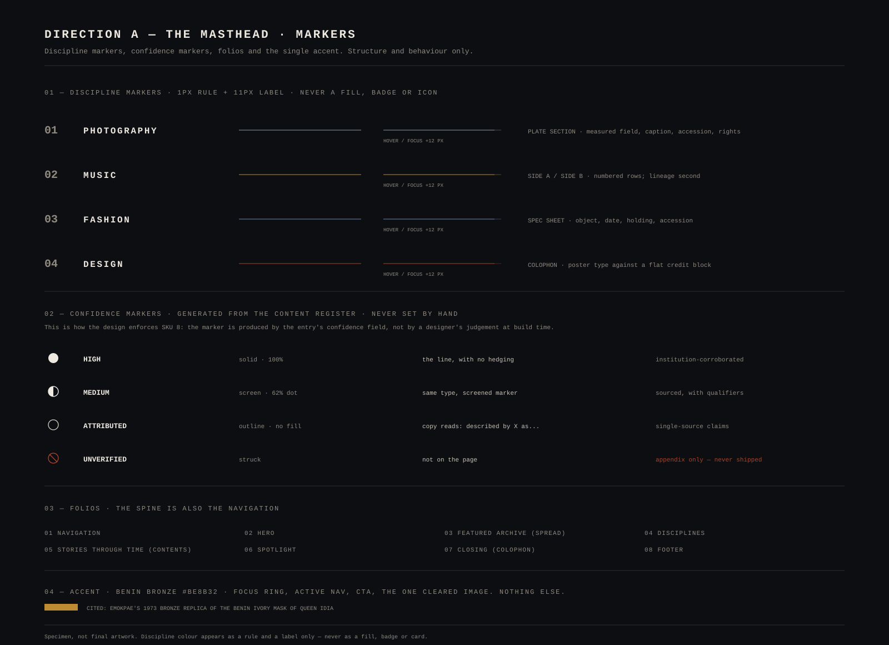
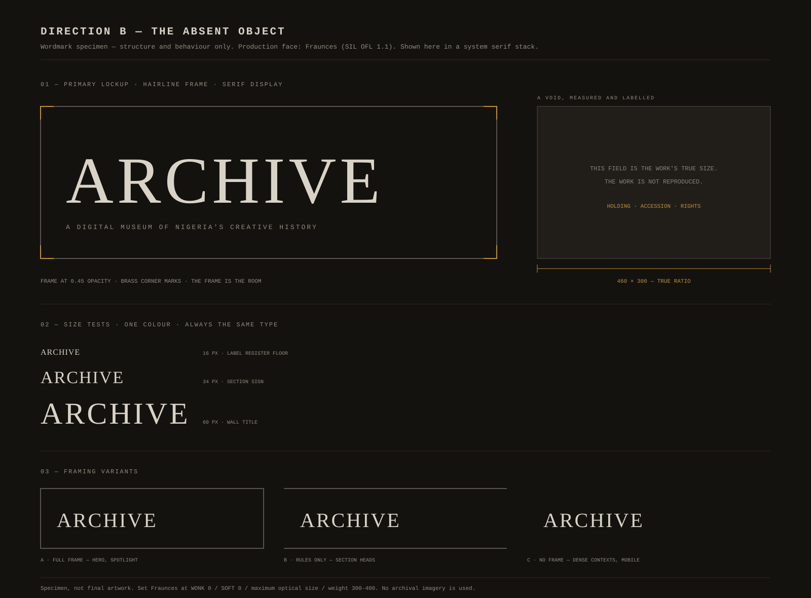
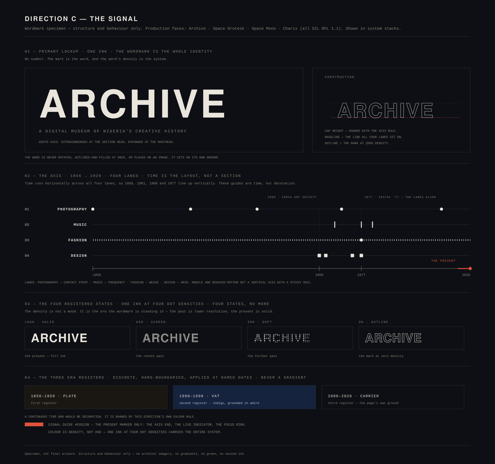

Three identity directions for ARCHIVE — a digital museum of Nigeria's creative history — each argued, compared and costed, followed by the one recommended for the build. Specimens are structural: they show how each system behaves, not final artwork.
ARCHIVE is published, not exhibited. A dark, type-led cultural publication whose masthead, folio line, issue number and credit columns do the work that photographs would normally do. It borrows authority from the magazine shelf rather than the museum vitrine — which is where the research locates the tone this audience already trusts.
The proposition
What carries it
The wordmark is never redrawn — only its state changes. Four registered states, finite and named. The state encodes how much the page trusts a claim, so the design system itself carries the honesty rule the project is built on.
Registered states
Production face

Discipline markers are a one-pixel rule and a label — never a fill, never an icon. Confidence markers are generated from the content register, never by hand, so a claim cannot be presented as stronger than its source.
Confidence
Disciplines

ARCHIVE is a room built around what it cannot show. Every absence is titled, dated, measured and attributed, so the institution abstracts its own space rather than the cultures it holds. The most interesting of the three documents, and the one that centres the limitation instead of the work.
The proposition
Risk
A hairline-framed lockup in a wall-label register, with measured voids that carry aspect ratio, dimension lines and the holding institution. Its one transferable idea — never let an absence be silent — is imported into the recommended direction, where it costs almost nothing.
Register
Ground

ARCHIVE is a transmission that never stopped. One invariant re-ordered across time is the identity, built on a citable Nigerian principle: Uli practice holds the vocabulary fixed and makes the ordering the creative act. The strongest historical argument of the three, and the hardest to build accessibly.
The proposition
Risk
The wordmark in true dot-screen states, across three era registers, on an axis ticked 1856 · 1958 · 1961 · 1968 · 1977 · 2026. Its best contributions — registered states as the identity mechanic, and a marker system for the disciplines — are absorbed into the recommended direction without its build and cultural risk.
Mechanic
Guard

Take Direction A — The Masthead — forward, with two imports: the absence policy from B, and the registered-state and marker mechanics from C. A is the only direction that wins on both halves of the same decision: distinctive and culturally grounded, and buildable, accessible and usable by one person inside the budget.
Take forward
Why